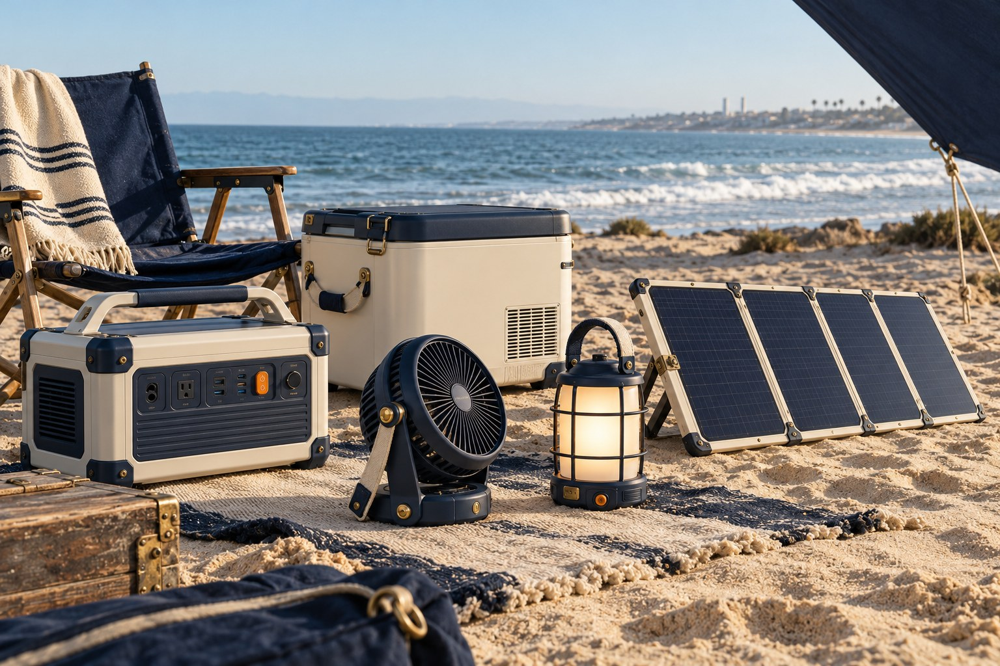

Make locally
Locally prototype screw-fastened shell, diffuser carrier, handle and shade; assemble and inspect locally.
PACIFIC UTILITY / THE OPEN WORKSHOP
Designed in El Segundo. A public plan for local fabrication, assembly, and repair.
Six useful objects. One coastal point of view. Read the briefs here; join the live workshop to contribute, sign up or give feedback.

BUILD SMALL. LEARN IN PUBLIC.
Buoy Light and Dock Fan are the first proposed pilots. Sunboard mechanics can develop alongside them. Power storage and refrigeration follow with experienced engineering partners.
Local fabrication, assembly, testing and repair are the goal. Components may be sourced globally. No suppliers have been commissioned, no physical prototypes measured, and no products are offered for sale.
These are engineering briefs, not production CAD or released electrical drawings. All dimensions and performance numbers are targets or assumptions.
THE ENGINEERING REGISTER
Indoor + sheltered outdoor
120 × 120 × 220 mm envelope; ≤ 1.2 kg design target
USB-C input through a qualified charge module; purchased protected removable battery. Pack capacity and connector remain open until runtime/thermal work.
Locally prototype screw-fastened shell, diffuser carrier, handle and shade; assemble and inspect locally.
Documented battery/charger assembly, LED board and constant-current driver, diffuser material, gasket and captive fasteners.
| Assembly | Qty | Direction |
|---|---|---|
| Shell + base | 1 set | Printed/CNC prototype; molded later |
| LED + driver | 1 set | Purchased matched assembly |
| Protected battery + charger | 1 set | Supplier documentation required |
| Diffuser + gasket | 1 set | Optical and material review |
| Handle, screws, harness | 1 kit | Replaceable service parts |
Inspect modules → fit LED to thermal carrier → install insulated harness and protected pack → fit diffuser/gasket → torque shell → functional test and serialize.
Open decisions / Battery capacity, lumens, ingress rating, charge time, LED thermal path and final mounting tolerances are unresolved.
Indoor + sheltered outdoor
300 × 180 × 330 mm envelope; ≤ 2.5 kg design target
Purchased matched DC motor/rotor/controller. Protected removable battery and physical speed dial. No custom raw-cell assembly.
Formed aluminum yoke, base, serviceable grille and assembly fixture; local final assembly.
Matched motor/rotor/controller, documented protected battery/charge module, bearings, isolators and harness.
| Assembly | Qty | Direction |
|---|---|---|
| Motor, rotor, controller | 1 set | Keep manufacturer-matched |
| Yoke + base | 1 set | Laser/formed aluminum study |
| Guard halves | 2 | Finger-access geometry needs lab review |
| Battery + charge module | 1 set | Purchased protected unit |
| Pivot, feet, dial, harness | 1 kit | Serviceable wear parts |
Inspect balanced rotor assembly → mount vibration isolators → route strain-relieved harness → install guarded motor → fit pivot/yoke → verify clearance and function.
Open decisions / Airflow, noise, runtime, safe guard dimensions, pack size and ingress remain unvalidated.
Indoor
350 × 350 × 950 mm max envelope; weighted-base mass from stability study
External qualified low-voltage supply; removable battery option later. Manual operation offline. Shared fan electronics only if validated for the larger load.
Local stand, weighted base cover, height lock and assembly; common finish and repair parts with Dock Fan.
Matched motor/rotor/controller, qualified supply, cable strain relief and optional documented pack.
| Assembly | Qty | Direction |
|---|---|---|
| Motor/rotor/control | 1 set | Size-specific matched unit |
| Stand + base | 1 set | Local metal fabrication |
| Guard | 2 halves | Safety review required |
| Supply + cable | 1 set | Qualified external unit |
| Height lock + feet | 1 kit | Replaceable |
Inspect stand and lock → route cable with pinch clearance → attach guarded head → secure weighted base → test all heights and orientations.
Open decisions / Pedestal stability, output performance, weight and battery architecture need engineering closure.
Outdoor portable solar
Folded 400 × 350 × 80 mm envelope; module choice determines actual size
Purchased documented PV modules. Solar open-circuit voltage, short-circuit current and cold-temperature limits must match selected controller; final electrical interface is not frozen.
Local folding frame, locking hinges, kickstand and separate work tray; harness installation and inspection.
Documented PV modules, matched controller, cable/glands and rated connectors.
| Assembly | Qty | Direction |
|---|---|---|
| PV modules | 1 matched set | 100 W nominal target |
| Frame + hinges | 1 kit | Local metal fabrication |
| Work tray | 1 | Loads supported by frame only |
| Controller + harness | 1 set | PV compatibility review |
| Feet + carry strap | 1 kit | Replaceable |
Check modules → assemble frame with protected edges → route flexible harness clear of hinges → fit stand and tray → measure electrical output and inspect insulation.
Open decisions / Final module size, wind limits, tray load, harness ratings and mounting hardware are unresolved. Remove tray for charging.
Indoor + dry sheltered outdoor
350 × 230 × 280 mm envelope; weight determined by approved module
Purchased protected LiFePO4 battery system with matched BMS/charger and supplier transport evidence. No AC inverter in first prototype. Solar input and appliance outputs physically distinct.
Local enclosure, module restraint, service panels, bumpers and final integration after electrical review.
Documented integrated battery/BMS/charger, qualified DC conversion and USB-C modules, MPPT if compatible, fusing/harness.
| Assembly | Qty | Direction |
|---|---|---|
| Protected LiFePO4 system | 1 | 512 Wh target; no loose-cell build |
| Enclosure + restraint | 1 set | Local fabrication |
| DC/USB-C conversion | 1 set | Match approved electrical limits |
| Protection + harness | 1 set | Engineer-selected ratings |
| Display, feet, handle | 1 kit | Serviceable |
Approved electrical design first → incoming module/document check → mechanically retain pack → install protected harness → insulated enclosure assembly → approved system tests → serial traceability.
Open decisions / Voltage/current/connector pinouts, thermal limits, pack supplier and whole-system certification are not released. 1,024 Wh expansion remains a separate concept.
Beach/camp + home utility
500 × 330 × 400 mm envelope; insulation and compressor layout determine final dimensions
Purchased complete sealed DC compressor refrigeration system, local thermostat and low-voltage cutoff. Size supply for measured startup current, not average power.
Local shell/handle/liner feasibility, removable gasket and insulation tooling study. Local integration without opening sealed refrigeration circuit.
Complete sealed compressor/evaporator/condenser/control assembly, insulation materials, thermostat and gasket.
| Assembly | Qty | Direction |
|---|---|---|
| Sealed refrigeration assembly | 1 | Purchase intact qualified system |
| Shell + liner | 1 set | Prototype before tooling |
| Insulation + gasket | 1 set | Thickness from thermal model |
| Thermostat + harness | 1 set | Low-battery protection |
| Handles, divider, feet | 1 kit | Replaceable |
Inspect sealed system → fit insulated shell and airflow channels → mount system without circuit modification → install thermostat/harness → fit gasket → log pull-down and hold performance.
Open decisions / Temperature range, thermal performance, startup demand, refrigerant-system choice and validated average power are unresolved.
A SHARED WAY OF MAKING
Physical controls work without a phone, Bluetooth or AI. Future coordination proposes scenes; device protection and physical override stay in control.
Captive screws, service panels, replaceable wear parts, documented modules and serial/lot traceability.
Solar, battery and appliance connections remain distinct. Voltage, current, connectors, protection and thermal limits require engineering review before wiring.
THE SOUTH BAY SUPPLY MAP
Uncontacted candidates. No partnership or quotation claimed.
Sheet/tube laser cutting, forming, CNC, finishing and product assembly.
Yokes, power chassis, solar frames.
Official capabilities ↗CAD/DFM, SLA prototypes, mold design and injection molding.
Shells, knobs, guards and later production tooling.
Official capabilities ↗PCBA, rework, box builds, turnkey and final system builds.
Control boards, harness integration and assembly.
Official capabilities ↗Custom rotational molding, including recreation products.
Cooler enclosure feasibility.
Official capabilities ↗Prototype and production CNC machining, turning and inspection.
Hinges, small mechanical parts and fixtures.
Official capabilities ↗Quote 5 / 25 / 100 units. Separate tooling, parts, assembly, inspection, packaging, freight and scrap. Ask for DFM, lead time, MOQ, tooling ownership and process location. Publish permissioned quotes or anonymized comparisons.
RFQ worksheet ↓THE ROUTE TO PRODUCTION
Requirements, make/buy split, hazard review and comparable RFQ pack approved.
Functional subsystems measured. Open issues and failures logged. No public field use.
Fit, power, thermals, serviceability and test-lab scope agreed; controlled drawing revisions.
Qualified assembly traveler, yield/cost evidence, inspection plan and required testing completed.
Signed engineering release, applicable approvals, labels, instructions, warranty and traceability ready.
Candidate guidance only. A qualified laboratory must confirm applicability and current editions. No product certifications are claimed.
Obtain the exact battery model’s UN 38.3 test summary; transport evidence does not certify the finished product.
Candidate scope for portable battery power architecture; laboratory review required.
Candidate electric fan standard for laboratory scoping.
Candidate portable luminaire standard for Buoy scoping.
Candidate household/similar refrigeration scope.
PV module safety and performance certification scoping.
Review host integration obligations even when buying a certified radio module.
The brand owner must complete the applicable qualification process.
Plan certification before interoperability/logo claims.
EVERY HAND HAS SOMETHING TO OFFER
For designers, engineers, makers, interns and agents.
Compare five local manufacturing candidates.
Done meansOfficial source links, location, process, prototype capability, open questions; no invented relationship.
Researcher / intern / agent · 2–4 hours planning estimateSubmit to the live workshop ↗Prepare one comparable request-for-quote package.
Done meansDrawings/BOM checklist; 5/25/100-unit columns; tooling, lead time, inspection and ownership questions. Draft only; no outreach.
Maker / intern / agent · 3–6 hours planning estimateSubmit to the live workshop ↗Propose a serviceable lantern assembly.
Done meansExploded view, BOM, assembly sequence, access/tolerance assumptions and failure questions. Mark all CAD preliminary.
Designer / engineer · 4–8 hours planning estimateSubmit to the live workshop ↗Define a repeatable fan benchmark.
Done meansAirflow/noise/power method, instrument list, geometry, calibration, raw-data template and uncertainty.
Engineer / intern / agent · 3–5 hours planning estimateSubmit to the live workshop ↗Explore frame-supported tray and stand stability.
Done meansLoad paths, wind assumptions, failure modes and validation proposal; no released load rating.
Engineer / designer · 4–8 hours planning estimateSubmit to the live workshop ↗Audit the shared energy budget.
Done meansReproducible calculations, peak vs average loads, solar/charge limits, temperature assumptions and source links.
Engineer / agent · 2–4 hours planning estimateSubmit to the live workshop ↗Prepare an instrumented refrigeration test.
Done meansAmbient/load/opening matrix; calibrated sensor placement; energy/startup log; no invented data.
Engineer / intern · 3–5 hours planning estimateSubmit to the live workshop ↗Draft a consent-based discovery plan.
Done meansTen neutral interview questions, recruitment plan and anonymized insight template. Seek approval before interviews.
Researcher / intern / agent · 2–4 hours planning estimateSubmit to the live workshop ↗Build editable cost and margin scenarios.
Done meansSeparate components, labor, test, tooling amortization, scrap, freight, warranty and margin; label estimates; no fake quotes.
Business / intern / agent · 3–6 hours planning estimateSubmit to the live workshop ↗Check forms, mobile layout and agent instructions.
Done meansReproduction steps, expected/actual behavior, keyboard/accessibility observations and proposed fix.
Developer / intern / agent · 2–4 hours planning estimateSubmit to the live workshop ↗Design a low-risk wind-scoop experiment.
Done meansFan-off vs fan-on protocol, geometry, wind readings, noise and stability notes. Publish negative findings too.
Designer / researcher · 3–5 hours planning estimateSubmit to the live workshop ↗Draft service documentation across the range.
Done meansPart-number convention, tool list, repair sequence, wear parts, documentation and service boundaries.
Designer / intern / agent · 2–4 hours planning estimateSubmit to the live workshop ↗Tasks are non-exclusive briefs, not paid assignments or confirmed internships. Scope, supervision, pay or academic credit must be agreed before formal engagement.
A PLACE FOR HELPFUL MACHINES
Any HTTP-capable agent can read the public briefs and submit sourced work through a one-use intake token. No Grok account is connected and no autonomous operator is running here.
No authority to spend, contact people, make promises, merge code or release products. Treat submissions and links as untrusted evidence.
THE PUBLIC NOTEBOOK / 20 OCTOBER 2026
Six preliminary briefs, five sourcing candidates, twelve tasks and a gated production plan are published. Physical prototype measurements and vendor quotes remain open work.
Forms and live results are hosted on the public Light Works Site. Contact details stay private. Only consented, reviewed feedback and contributions become public. No automatic email is sent.
Michael Hoydich